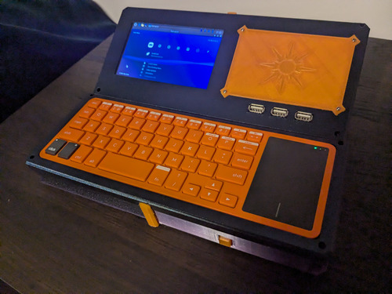

NEB-01
This was originally designed to run a rpi5 but mine had issues so I parted both the battery and rpi3B from the PPi7 and it works like a charm. It can do anythting that the PPi7 could but also as a desktop. It comes with an expansion panel that can screw in and out of place so adding buttons is possible without redesigning the entire thing.
Status: Functional
